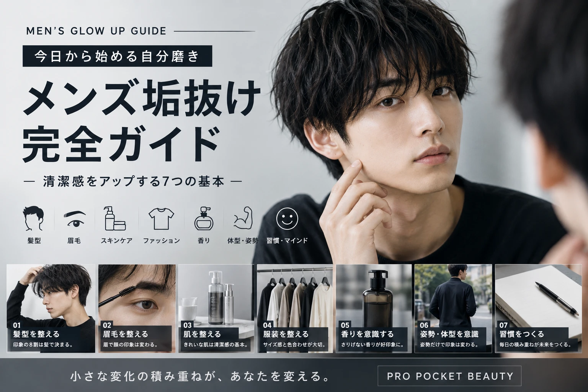

垢抜けは
小さな変化から。
「垢抜けたいけど、何から始めればいいかわからない」 という人は少なくありません。
いきなり高い服や美容アイテムを買う必要はありません。 まずは見た目の基本を一つずつ整えていきましょう。
まずは髪型を
整える
髪型は顔まわりの印象を大きく左右します。
髪が伸びすぎていない
寝ぐせをそのままにしない
自分に合う髪型を探す
まずは「整っている髪」を目指すだけでも十分です。
眉毛を整えると
顔がすっきり
眉毛は顔の印象を作る重要なパーツです。
最初から大きく形を変えるのではなく、 長い毛や明らかに不要な毛を少しずつ整えましょう。
初心者のポイント
「細くする」よりも、 「自然に整える」を意識しましょう。
肌は
毎日のケアから
特別な美容法より、 毎日の基本的なスキンケアを続けることが大切です。
洗う
肌をこすりすぎないように洗います。
うるおす
洗顔後は肌の状態に合わせて保湿します。
守る
日中は紫外線対策も意識しましょう。
顔まわりの
清潔感をチェック
眉毛が伸びすぎていない
ヒゲを整えている
唇が乾燥していない
肌が極端に乾燥していない
服は
サイズ感が重要
高い服を買わなくても、 サイズや組み合わせを整えるだけで印象は変わります。
初心者はシンプルから
白・黒・ネイビー・グレー・ベージュなど、 合わせやすい色を中心にするとコーディネートしやすくなります。
服に強いシワや汚れがないことも、 清潔感につながります。
体型よりも
「整っていること」
垢抜けるために、 必ずしも理想的な体型を目指す必要はありません。
姿勢や服のサイズ、 髪型などを整えるだけでも全体の印象は変わります。
今日からできること
背筋を伸ばす、歩き方を意識する、 服のサイズを確認する。 小さなことから始めましょう。
香りは
「控えめ」が基本
香水などを使う場合は、 強く香らせるよりも自然に感じる程度を意識しましょう。
香りだけでなく、 汗や衣類などのニオイケアも大切です。
全部を一気に
変えなくていい
垢抜けで大切なのは、 すべてを一度に変えることではありません。
髪を整える
まず顔まわりを整えます。
眉毛を整える
自然な形を意識します。
スキンケアを続ける
毎日の習慣にします。
服を整える
清潔感とサイズ感を確認します。
お金をかける前に
見直したいこと
髪型を整える
眉毛を整える
手持ちの服を整理する
睡眠や生活リズムを見直す
新しいアイテムを買う前に、 今あるものを整えるだけでも変化を作れます。
垢抜けで
やりすぎないこと
流行を全部取り入れる
服や美容用品を一気に大量購入する
眉毛や髪型を極端に変える
他人の見た目をそのまま真似する
まずは7日間
ここから
髪を整える
鏡を見て髪型をチェック。
眉毛をチェック
長い毛や不要な毛を確認。
スキンケアを見直す
洗顔と保湿を確認。
服を整理
よく着る服を確認。
靴をチェック
汚れや状態を確認。
全身を確認
鏡で全体のバランスを見ます。
自分に合うスタイルを探す
無理なく続けられる方法を選びます。
垢抜けは
「整える」ことから。
メンズの垢抜けは、 高い服や高価な美容アイテムだけで作るものではありません。
髪、眉毛、肌、服装、清潔感。 一つずつ整えていけば、 自分に合ったスタイルを見つけやすくなります。
少ない予算で、
最大限かわいく。
メンズ美容も、 無理なく自分らしく。